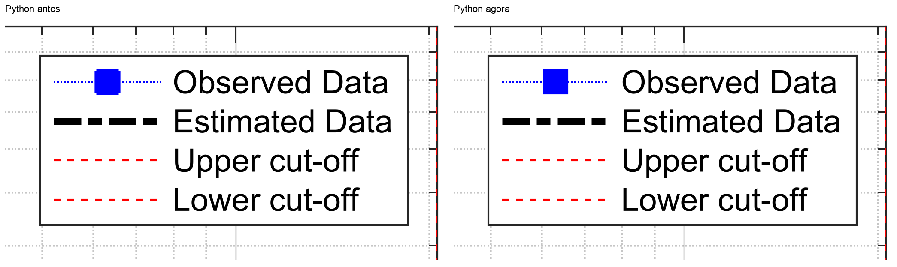
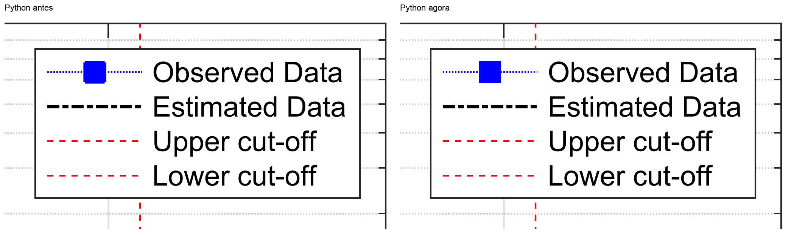
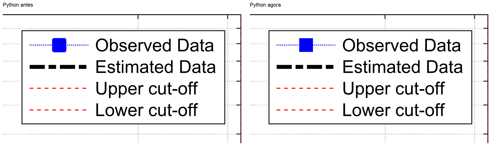
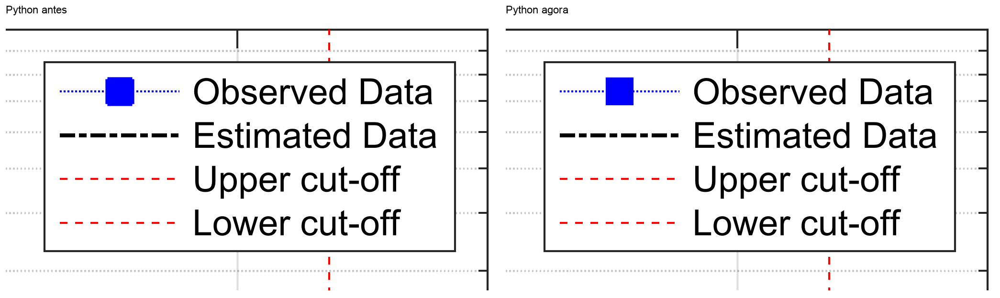
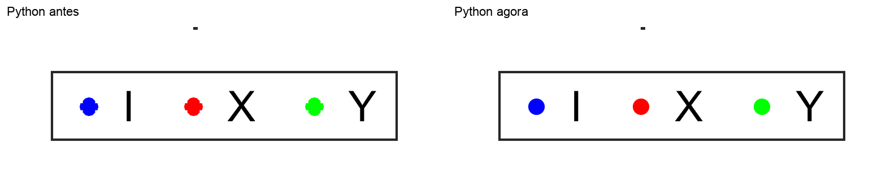
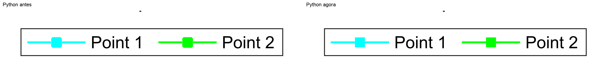
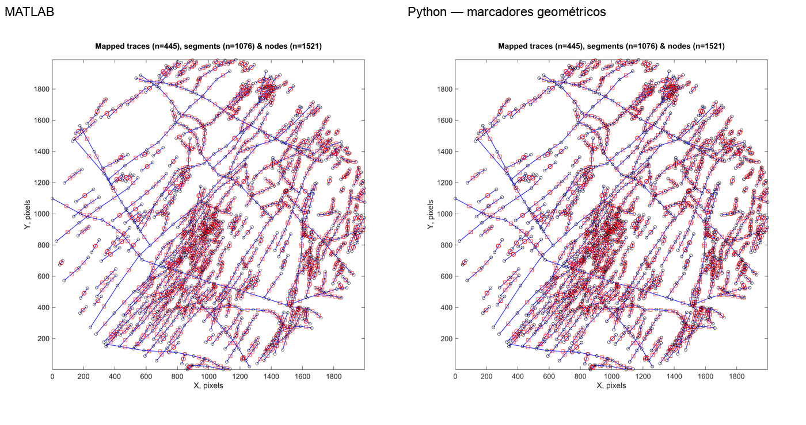

Casos 1 a 16 aprovados pelo usuário em 16/11/2026; S16-04 concluída. A propagação ao mapa e aos pontos nos recortes de títulos foi verificada separadamente: zero pixels alterados fora dos limites dos marcadores. Prova. S16-09 permanece aberta.
Python antes e depois da substituição autorizada. Sem alteração de tamanhos nominais, cores ou dados. Clique nas imagens para ver os recortes em resolução original. As figuras nativas e as métricas brutas são preservadas.






A substituição também se aplica aos marcadores do mapa. Coordenadas e quantidades preservadas; comparação RGB do plot: SSIM 0,940659, abaixo de 0,98. A diferença visual continua explícita.
